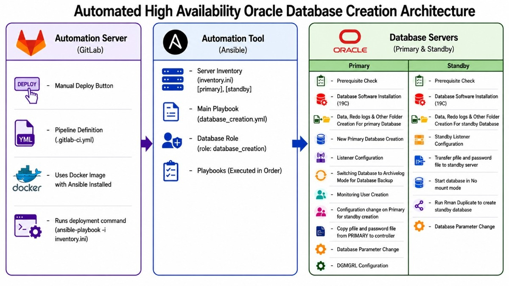
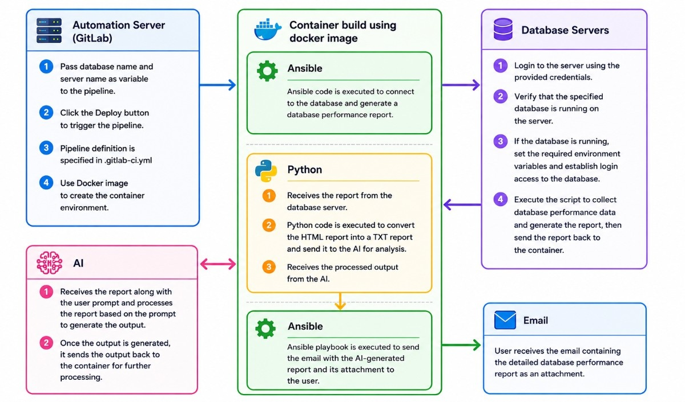

Automation Architecture Summary
Automation 1: Automated High Availability Oracle Database Creation Architecture
This diagram shows an automated process for deploying an Oracle High Availability (HA) database environment using GitLab, Ansible, and Oracle Primary/Standby servers.

1. Automation Server (GitLab)
- Provides a manual deploy button to start the deployment.
- Stores the CI/CD pipeline configuration (`.gitlab-ci.yml`).
- Uses a Docker container with Ansible installed.
2. Automation Tool (Ansible)
- Uses an inventory file containing Primary and Standby database servers.
- Executes the main playbook (`database_creation.yml`).
- Uses the `database_creation` role to automate Oracle database provisioning and configuration.
3. Database Servers (Oracle Data Guard)
Primary Server
- Performs prerequisite validation.
- Installs Oracle 19c software.
- Creates database, datafile, controlfile, redo log, and audit directories.
- Creates and configures the primary database.
- Configures listener, archivelog mode, monitoring user, and Data Guard settings.
Standby Server
- Installs Oracle 19c software.
- Creates required directories.
- Configures listener.
- Receives password and configuration files from the primary server.
- Starts the instance in NOMOUNT mode.
- Uses RMAN Duplicate to create the standby database.
- Applies Data Guard parameter configuration.
Overall Flow
GitLab → Ansible → Oracle Primary & Standby Databases
The architecture automates the complete setup of an Oracle Data Guard environment, reducing manual effort and ensuring consistent deployment of a highly available database solution.
Automation 2: AI-Powered Database performance Analyzer
This workflow illustrates an end-to-end automated framework for generating, analyzing, and distributing database performance reports using GitLab, Docker, Ansible, Python, AI, and Email integration.

1. Pipeline Initiation (GitLab Automation Server)
The process begins when a user provides the target database and server details through the GitLab pipeline. Upon deployment, GitLab triggers a predefined CI/CD pipeline that builds and launches a Docker container to execute the workflow.
2. Database Performance Data Collection
Inside the container, an Ansible playbook securely connects to the specified database server. It validates connectivity, configures the required environment variables, executes database health and performance checks, and generates a detailed performance report.
3. Report Processing and AI Analysis
The generated report is returned to the container, where a Python module converts the report into a format suitable for AI processing. The report, along with the user-defined prompt, is then submitted to the AI engine for analysis.
The AI reviews the collected performance data, identifies key insights, and generates a summarized and actionable assessment based on the user's requirements.
4. Response Integration
The AI-generated output is returned to the container and passed back to the automation workflow. The processed insights are combined with the original report to create a comprehensive deliverable.
5. Automated Report Distribution
A second Ansible playbook prepares the final email package, attaches the database performance report and AI-generated analysis, and sends it to the designated recipients.
6. Final Outcome
The end user receives a professionally formatted email containing:
- Detailed database performance metrics
- AI-generated analysis and recommendations
- Actionable insights for database optimization and troubleshooting
Key Benefits
- Fully Automated Process - Eliminates manual report generation and analysis.
- Scalable Architecture - Containerized execution enables easy deployment across environments.
- AI-Powered Insights - Converts raw database metrics into meaningful recommendations.
- Secure and Repeatable - Uses Ansible automation and GitLab CI/CD for standardized execution.
- Faster Decision-Making - Delivers actionable performance insights directly to stakeholders via email.
The solution automates the complete lifecycle of database performance assessment—from data collection and AI-driven analysis to report delivery—providing users with timely, consistent, and actionable database health insights.